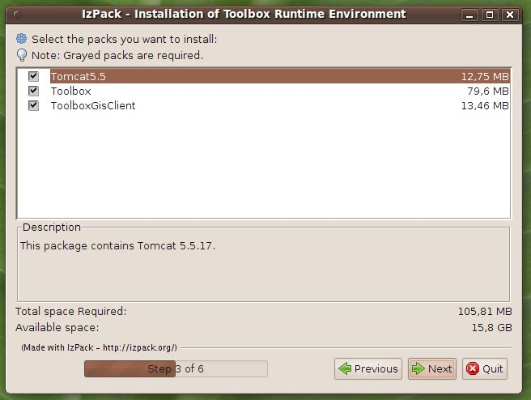

Installing the TOOLBOX on an alreadyinstalled TOMCAT
To install the TOOLBOX on a TOMCAT already installed on the target machine follow these steps.
Open a shell and type: java -jar <installer_name>.jar
The language selection panel should appear.
Select the language and then click on Ok.
The welcome panel should appear. Click on Next


Select the package to install and click on Next. The packages may all be mandatory and already pre-selected.

Select the path to the Tomcat installation
directory and click on Next. Toolbox will be deployed under <TOMCAT>/webapps

The installation process is started. The progress bar will provide feedback regarding the installation status.
At the end of the installation the installer should display
Click on done to complete the installations.
If you want to execute the installed Tomcat as daemon (or service under windows) follows the stepse described here.